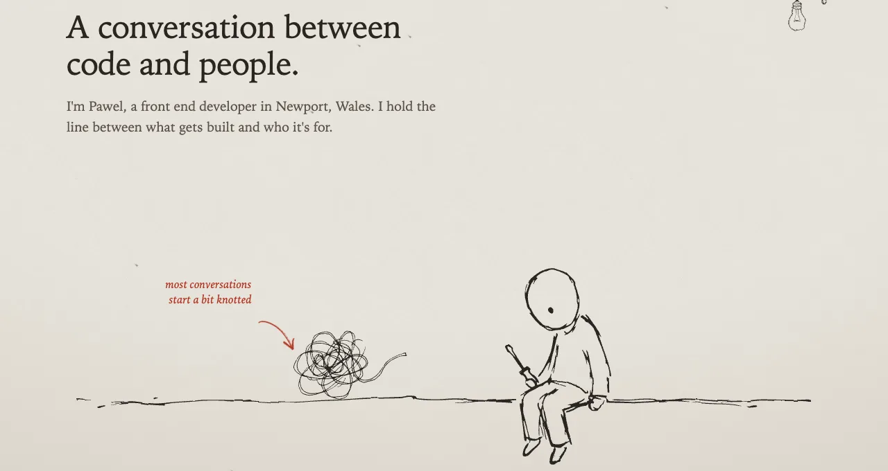

One line, drawn by hand
This site is drawn with one pen. Every figure, knot and kite on it began as a quick fineliner sketch on white paper, and every one of them is painted on the page in whatever colour the ink happens to be at that moment: near black by day, warm off-white at night. None of the drawings knows what colour it is. That turned out to be the most useful decision in the whole build, so it is where this post starts.
I wanted a portfolio that felt like someone's notebook, not a template with a hand-drawn font. That meant the drawings had to behave like ink: take the colour of the page's pen, wobble a little, and sit on the paper instead of floating above it. It also meant the page had to stay fast, readable and accessible, because a notebook nobody can read is just a mood board.
A drawing that doesn't know its colour
Each sketch goes through the same small pipeline. A raster drawing is thresholded, traced with potrace into a single filled path, tidied with svgo, and saved with fill="currentColor". That on its own would let an inline SVG follow the text colour, but I didn't want hundreds of inline paths in the HTML. So the SVG is never shown. It is used as a mask, and the element behind it is painted with currentColor:
.ink {
display: block;
background: currentColor;
-webkit-mask: var(--src) center / contain no-repeat;
mask: var(--src) center / contain no-repeat;
aspect-ratio: var(--ar);
}The markup for any drawing is then one empty element with two custom properties: which file, and its aspect ratio. The file is cached, the element is cheap, and the colour comes from the cascade like any other text. When the theme flips, every drawing on the page flips with it, for free. The pencil marks (the red underlines, circles and ticks) are the same trick with a different colour set on a parent.
The one catch is that a mask only knows shape. You can't have two colours inside one drawing, so anything that needs a second colour is a second drawing laid on top. For this site that is a feature. It keeps me to one pen and one pencil, which is most of what makes it look like a notebook.
Letting the line boil
A drawing that sits perfectly still reads as a vector icon. Hand-drawn animation has a trick for this called boiling: you trace the same frame three times, and play the traces in a loop, so the line shivers slightly even when nothing is moving. Drawing everything three times was not going to happen, so the page does it with an SVG filter instead.
<filter id="boil-a">
<feTurbulence type="fractalNoise" baseFrequency=".03" numOctaves="2" seed="1"/>
<feDisplacementMap in="SourceGraphic" scale="3"/>
</filter>
.boil { filter: url(#boil-a); animation: boil .375s steps(1) infinite; }
@keyframes boil {
0% { filter: url(#boil-a); }
33% { filter: url(#boil-b); }
66% { filter: url(#boil-c); }
}Three filters with three different noise seeds, swapped at about eight frames a second with a stepped animation. The displacement is only three pixels, which is enough to make the line feel alive and not enough to make it hard to look at. Two details matter more than the numbers.
First, the filter goes on a wrapper, never on the masked element itself. Filters run before masks, so on the same element the noise would push the paint around and the mask would cut it back to the clean shape. On the wrapper, it bends the finished drawing.
Second, a filter makes its element a containing block for anything absolutely positioned inside it. I lost an evening to that one: every figure that was placed with a percentage top suddenly collapsed to zero, because the wrapper had no height. The fix is to give the wrapper the whole stage, with position: absolute; inset: 0, so the percentages have something to be a percentage of.
Scroll adds the way there, not the destination
A lot of the story page moves as you scroll. A kite lifts out of a laptop, a string drops down the CV, the camera pulls back from a very small planet. All of that is CSS scroll-driven animation, with no script and no polyfill. The rule that kept it sane was simple: the resting state is the finished drawing, and the scroll only adds the way there.
@media (prefers-reduced-motion: no-preference) {
@supports ((animation-timeline: view()) and (animation-range: entry)) {
.thread > .ink {
animation: draw linear both;
animation-timeline: view();
animation-range: entry 10% cover 45%;
}
}
}If a browser doesn't support view timelines, or someone has asked their system for less motion, none of that CSS applies and they get the page already drawn. Nothing is hidden waiting for an animation that never runs. It also means the page reads the same with CSS half loaded, which is a nice property to have for free.
One small ordering trap: animation-timeline has to come after the animation shorthand. The shorthand resets the timeline to the document clock, so if you write them the other way around, your scroll animation quietly becomes a one-second animation that runs on page load.

Clip, not hidden
The bug that cost me the most time was one word. Wide drawings run off the edge of the screen on phones on purpose, so the page needs to stop horizontal scrolling. The usual line for that is overflow-x: hidden on the body. Do that here, and every sticky element and every view timeline on the page stops working.
The reason is that hidden doesn't only hide. It makes the element a scroll container. Once the body is a scroll container, sticky elements stick to it instead of the viewport, and view timelines track their position inside it, where nothing ever moves. overflow-x: clip cuts off the overflow without creating a scroll container, so everything else keeps working. I now reach for clip by default, and use hidden only when I actually want something to scroll.
Accessible, even though it's drawn
Hand-drawn pages have a habit of hiding meaning in pictures. The rule I set was that a drawing can decorate meaning but never carry it alone. The pencil strike through an old CV line sits on top of real text in a softer colour, so a screen reader gets the words and anyone can still read them. The figure scenes that tell part of the story have a role of img and a sentence describing what happens. A drawing that is only decoration is an empty element, so there is nothing to announce.
Night mode was the other test. Because every drawing takes its colour from the ink, dark mode only has to change a handful of tokens: paper, ink, a softer ink and the pencil. I checked each pair against WCAG AA in both themes, rather than trusting my eye at two in the morning.
What I'd tell myself at the start
Decide on one pen before drawing anything. Most of the look came from limits: one line weight, one ink colour, one accent, and one small figure who holds the string. Every time I added a second style of anything, the page stopped looking like a notebook and started looking like a collage.
And measure the art instead of eyeballing it. Every pose on the stage is placed from numbers read off the drawing itself, by rendering it to a canvas and scanning for the lowest inked pixel, so each figure's feet land on the same ground line. It's dull work. It's also why the page feels like one drawing instead of a pile of stickers.